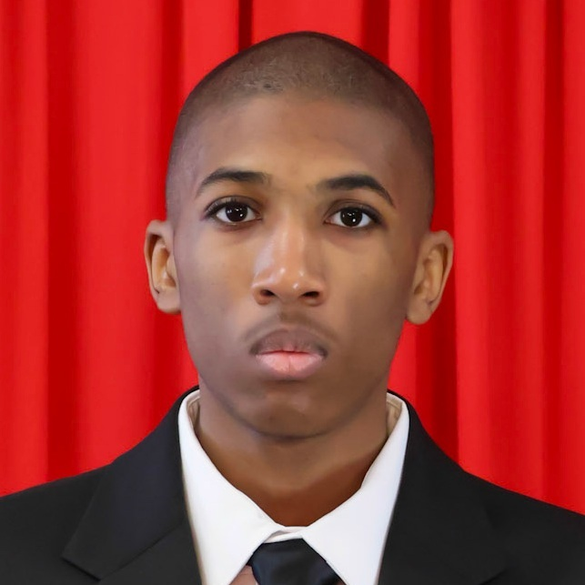

Field Experience

I am Malachi Keown, a student graduating from Collegiate High School at NWFSC.
By the time I graduate I will have my Associate's in Science from completing the Computer Information Technology track at my school.
Ever since I was 7, I have had an immense passion for developing games. Starting from Scratch, I would use block-based programming to explore as many different ideas as I could, constantly trying to innovate on game ideas that have come before.
Nowadays, I have experience in multiple different programming languages (HTML and CSS included) along with game development software.
Outside of my hobbies, I am kind, caring, and willing to help others if necessary. I work as hard as I can to get tasks completed as soon as possible.
Accomplishments